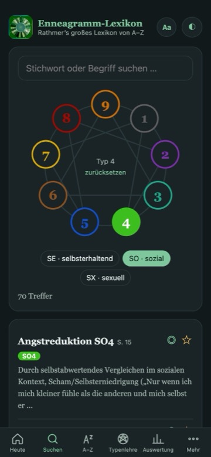
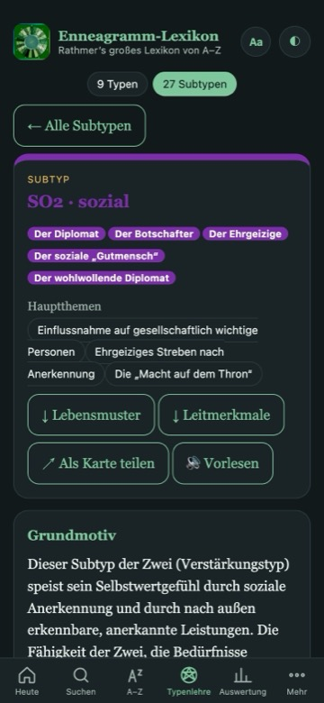
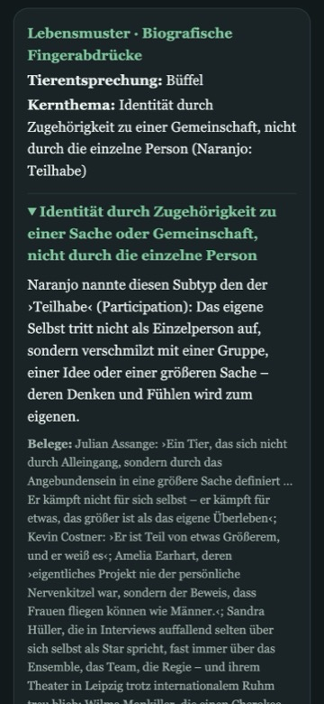
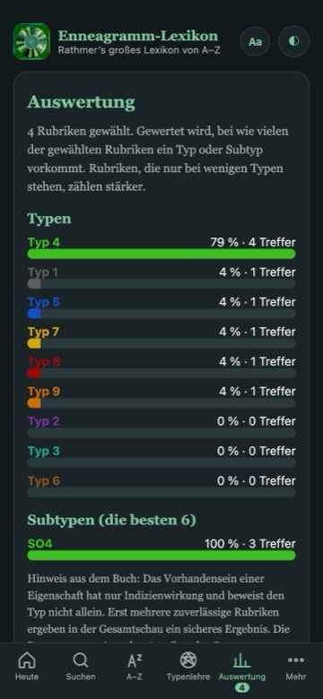

Die App zu „Rathmer’s großes Enneagramm-Lexikon von A–Z“
Enneagramm-Lexikon
Angst, Neid, Scham: Wo steht das im Enneagramm?
Über 6.000 Stichwörter zu den neun Typen und 27 Subtypen, von A bis Z: Gemüts-, Symbol- und Themenrubriken, Definitionen, Erklärungen und die Länder der Welt. Wählen Sie im Rad den Typ, filtern Sie nach selbsterhaltend, sozial oder sexuell und finden Sie in Sekunden, wo ein Stichwort vorkommt. Dazu die 27 Subtypen als ausführliche Profile mit Lebensmustern und eine Auswertung nach Art des Repertoriums.
Jetzt erhältlich
Enneagramm-Lexikon öffnenZunächst auf Deutsch, Englisch folgt. Zum Kennenlernen sind die Buchstaben A und B sowie drei Subtyp-Profile frei, alle Stichwörter sind durchsuchbar. Für das ganze Lexikon gilt eine einmalige Zahlung, ohne Abo: Einführungspreis 24,99 €, später 29,99 €, fünf Jahre Zugang. Den Zugang bekommen Sie per E-Mail.
Der Film zur App
90 Sekunden: Rad, Suche, Subtypen, Lebensmuster, Auswertung und Bildkarte.
Musik: „Nine Gazes, Nine Words“ von Detlef Rathmer.
Ein Blick in die App
So sieht die App auf dem Handy aus.




Was die App bietet
Volltextsuche über alle Stichwörter und Definitionen, auch bei Tippfehlern. Filter nach den neun Typen im Rad und nach den Subtypen SE, SO und SX.
Alle Stichwörter alphabetisch, mit Typ-Marken und der Buchseite. Tippen klappt die Definition auf.
Die neun Typen und die 27 Subtypen: je Subtyp ein neu gefasstes, einheitlich gegliedertes Profil mit Grundmotiv, Energiezentrum, Angstreduktion, Kennzeichen, Mottos und Dynamik im Alltag.
Die Stichwörter, die im Lexikon nur bei einem bestimmten Typ oder Subtyp stehen.
Biografische Fingerabdrücke je Subtyp, mit Tierentsprechung, Kernthema und den bekannten Persönlichkeiten, die dazu gehören.
Sammeln Sie Beobachtungen als Rubriken und sehen Sie, welcher Typ und Subtyp am besten passt. Mit dem Hinweis, dass eine einzelne Rubrik nur Indizienwirkung hat.
Über tausend Persönlichkeiten und Gestalten, nach Typ und Subtyp geordnet, laufend ergänzt aus den Porträts des Enneagramm-Heilungskompass.
Alle 202 Länder der Welt, nach Typ und Subtyp zugeordnet, mit Erklärungen aus dem Enneagramm-Heilungskompass. Auch über die Suche und das Rad zu finden.
Jedes Subtyp-Profil lässt sich als Bildkarte mit Kurzfassung weitergeben.
Einträge und Profile lassen sich mit der Stimme des Geräts vorlesen. Wie in den anderen Apps zeigt die Startseite das Wetter.
Buch und App
Zwei Fassungen, jede für einen anderen Zweck.
„Rathmer’s großes Enneagramm-Lexikon von A–Z“ ist ein Nachschlagewerk in zwei Ausgaben, als Hardcover und als Taschenbuch.
Dasselbe Wissen zum schnellen Finden, mit Rad, Filtern, neu gefassten Subtyp-Profilen, Lebensmustern, Auswertung und aktuellen Persönlichkeiten.
Das Buch zur App
Der Autor
 Detlef Rathmer
Detlef RathmerSachbuchautor, Enneagramm-Experte, Dozent und Coach. Seit dem Jahr 2000 als Heilpraktiker tätig, mit dem Schwerpunkt klassische Homöopathie.
Hinweis: Die App ordnet Wissen zur Orientierung und Selbstreflexion. Sie ist keine Diagnose und kein Ersatz für ärztliche oder psychotherapeutische Behandlung. Die Zuordnung von Personen zu Typen ist eine Einschätzung anhand öffentlich bekannter Informationen.